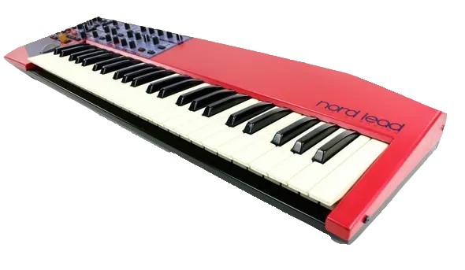
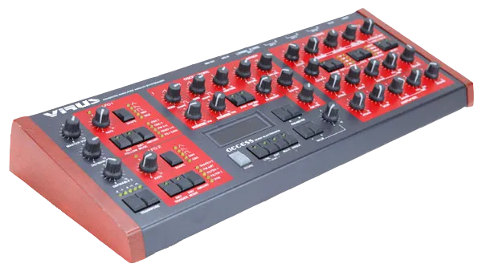

El trance psicodélico es lo que suena como el Goa Trance cuando eliminas el Goa.
Con el tiempo, la música se volvió más rápida, más psicodélica, más intensa y menos espiritual.
También contribuyó el lanzamiento de dos nuevos equipos analógicos virtuales que permitieron a Goa transformarse en Psy. El primero fue el Nord Lead 1 de Clavia, lanzado en 1995.

El otro fue el virus Access en 1997.

El Nord Lead 1 fue apodado "El Gritón", mientras que el Virus fue apodado "El Mutante" (tomando el nombre del TB-303 que lo ostentaba anteriormente).
Eso no quiere decir que crear Psy Trance fuera difícil antes del lanzamiento de estas bestias. Aún existían el SH-101 "Red Devil" y el Juno 106 "Fuck Oberheim" y una docena de sintetizadores más con los que experimentar. Pero estos dos sintetizadores en particular realmente cautivaron a todos los productores de Psy en un sonido característico. Así que si te preguntas por qué todos los Psy empezaron a sonar igual después del 97, esta es la razón. Mismo equipo; mismos presets; mismos arreglos.
Como el trance psicodélico es técnicamente el género base de toda la escena, ha generado la mayor cantidad de subgéneros. El principal de estos son sus incursiones en el trance, incluyendo el psy tech-trance, el psy techno, el tech psy y el psy tekk, que los amantes del psy trance insisten en que son cosas completamente distintas. También existen demarcaciones entre el "trance psicodélico melódico" y el "trance psicodélico oscuro", pero esas son solo descripciones que a ningún DJ en su sano juicio le importan.
También existe Suomisaundi (literalmente, "sonido finlandés"), una variante finlandesa fabricada por Fins que proviene de Finlandia.
Pero probablemente el subgénero más importante del trance psicodélico fue Full On.